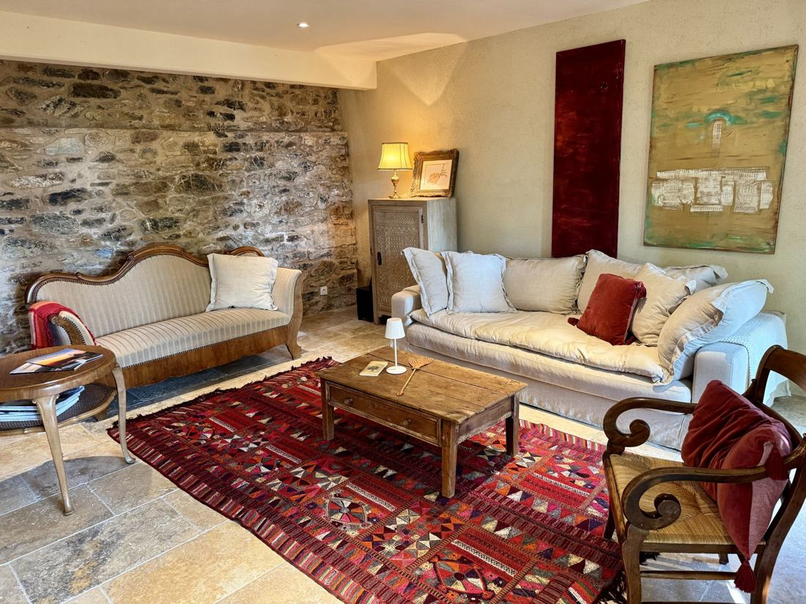
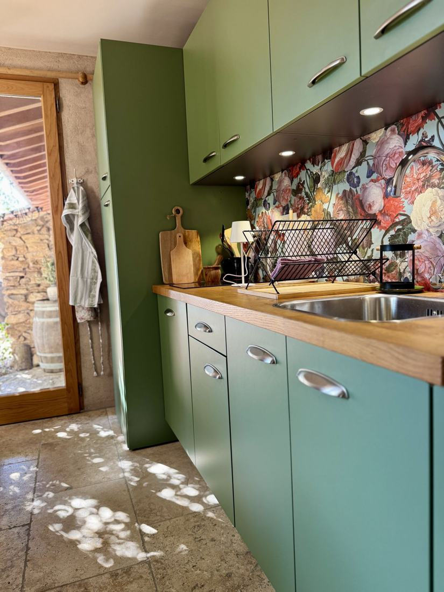
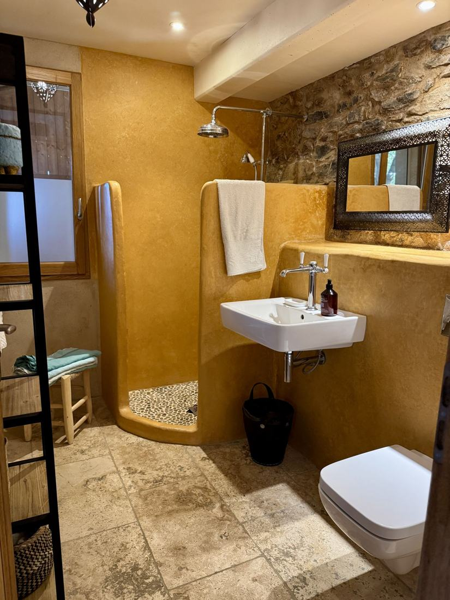
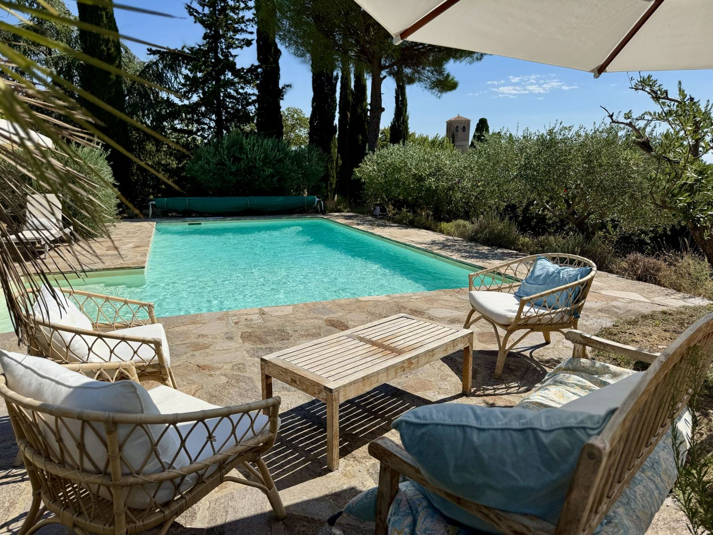
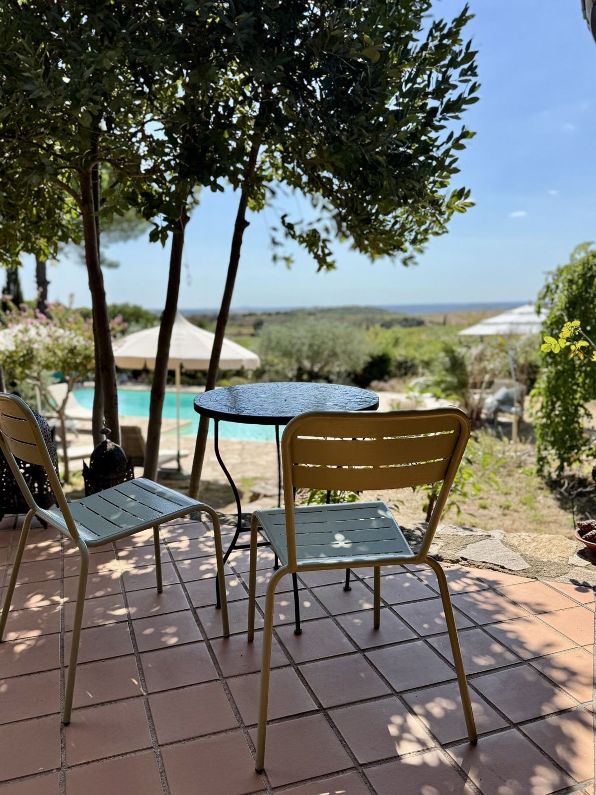
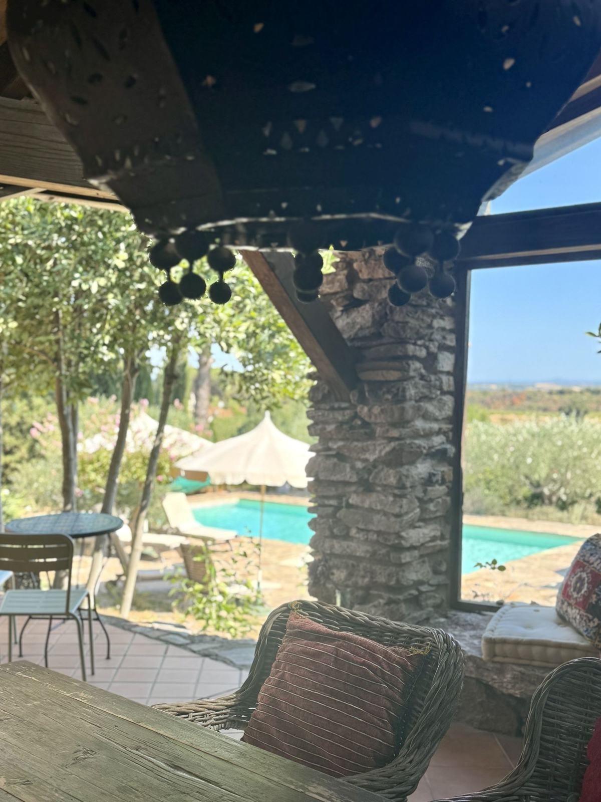
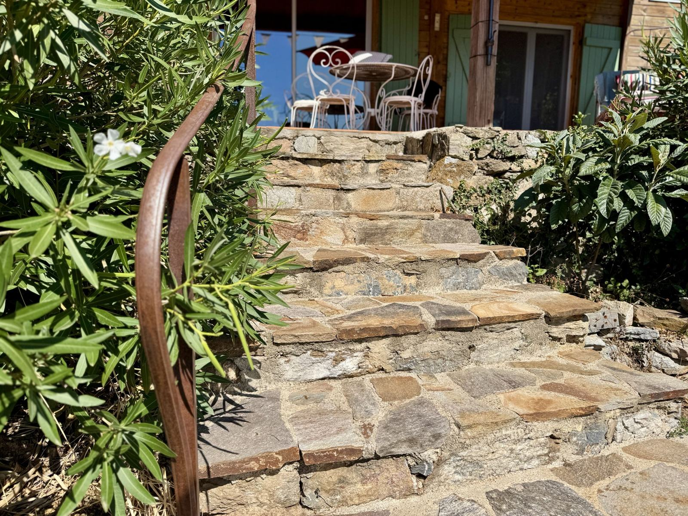
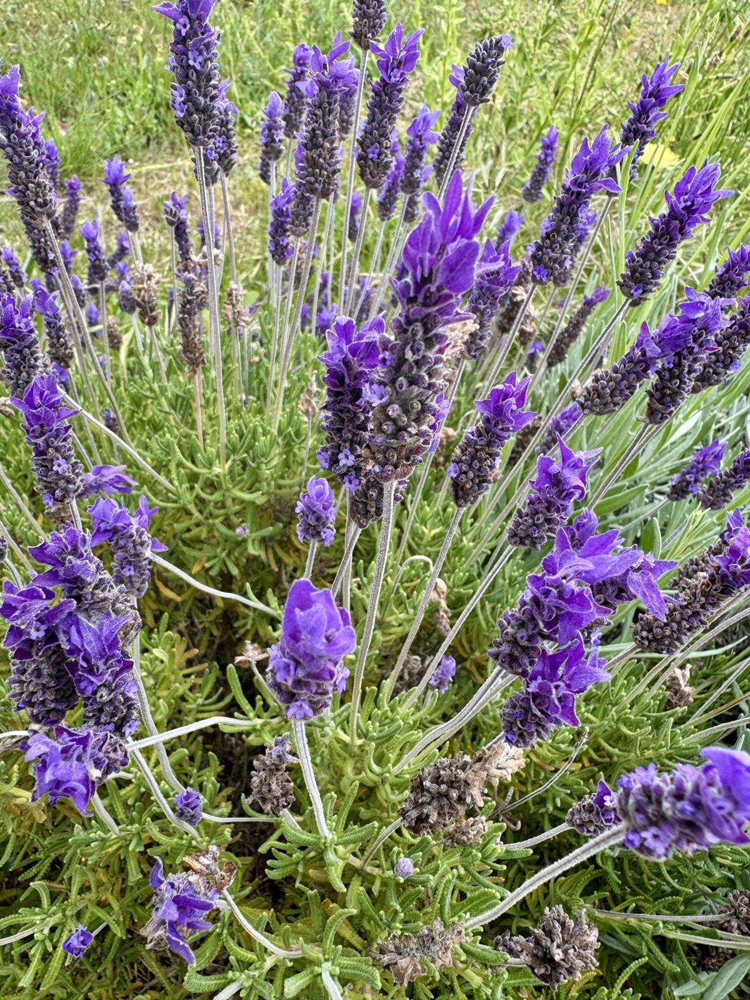
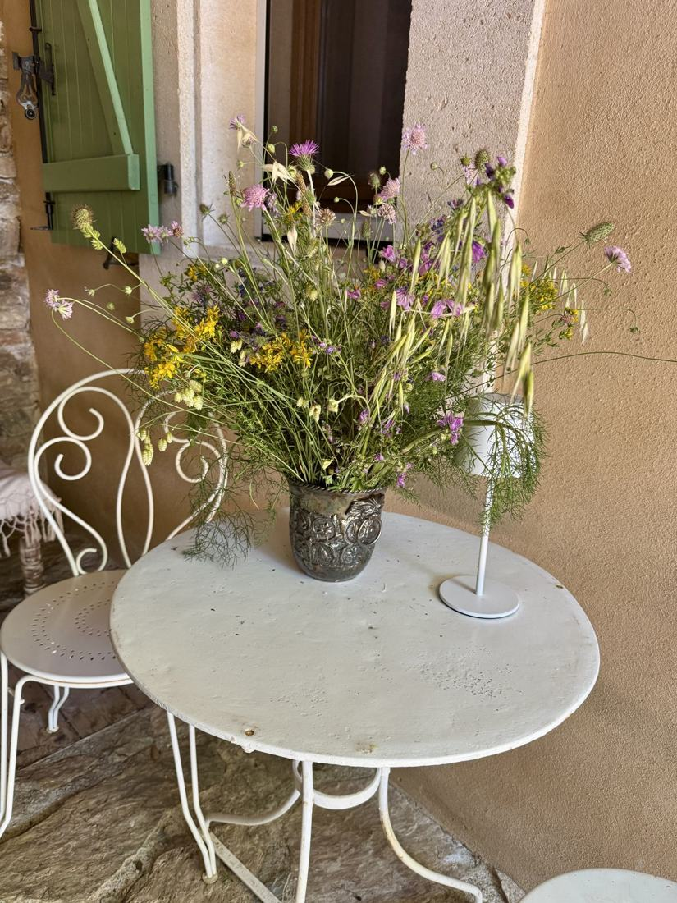

Erdgeschoss
Wohnzimmer
Gemütliche Sofas vor der alten Steinwand, dazu ein Beamer mit Filmen für die Abende.
Ein Steinhaus im Landhausstil, eingebettet zwischen den Rebfeldern des Weinbaugebiets AOC Faugères. Mit Garten, Pool und Blick über die Weinberge bis zum Meer.
Bienvenue chez nous!Das Gîte liegt in Caussiniojouls, einem kleinen Dorf nördlich von Béziers, am Rand des Regionalparks Haut-Languedoc. Es steht auf dem Grundstück von Sibylle und ihrem Mann, die ihre Gäste herzlich empfangen und gern Tipps für die Gegend geben.
Das Haus ist liebevoll im Landhausstil eingerichtet, mit marokkanischen Elementen: Natursteinmauern, Holzbalken, rote Teppiche, Laternen und viele Blumen. Bettwäsche, Handtücher, Strom, Heizung und Endreinigung sind inklusive.

Unten wohnen, kochen und essen, oben zwei große Schlafzimmer unter den Holzbalken. Das Erdgeschoss ist klimatisiert.

Gemütliche Sofas vor der alten Steinwand, dazu ein Beamer mit Filmen für die Abende.

Offene Küche mit Backofen, zwei Kochplatten, Wasserkocher, Toaster und italienischer Kaffeekanne.

Bad mit offener Dusche, Waschbecken und WC.

20 m², Doppelbett 160 × 200 cm, mit geschnitztem Kopfteil und Leseecke.

20 m², Himmelbett 180 × 200 cm und ein alter Sekretär.

Zwei Zustellbetten für bis zu 6 Personen, dazu Babybett und Hochstuhl.
Ein schattiger Platz unter dem Baum vor dem Haus, eine überdachte Terrasse mit großem Tisch und Grill und ein Pool, den sich die Gäste mit Sibylle und ihrem Mann teilen.









Zwischen Weinbergen, Flüssen und Meer: Städte, Strände und Museen sind in kurzer Fahrt erreichbar, Wanderwege beginnen direkt an der Haustür.
Freie Termine, Preise und die sichere Buchung finden Sie auf der Seite von Gîtes de France.
ab 805 € pro Woche Zu Gîtes de France → Anerkannt von Gîtes de France · Ref. 34G062
Anerkannt von Gîtes de France · Ref. 34G062

Fragen zum Haus, zur Anreise oder zu Ausflügen? Schreiben Sie Sibylle oder rufen Sie an, wir helfen gern.